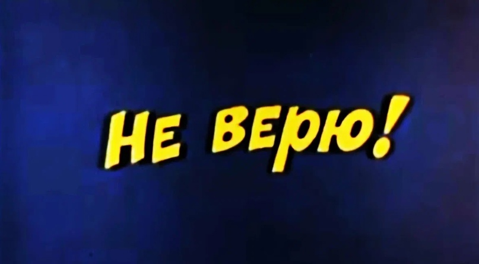

Когнитивные искажения

КИ - это баг мышления, ошибка мозга, который не верно считывает информацию. Искажения свойственны всем людям в разной степени. Здорово знать про них, уметь отлавливать и понимать, что вот конкретно здесь - твоя обезьянка тебя дурит. Если тебе кажется, что у тебя такого нет и мысли только рациональные - поздравляю, это первое искажение, эффект слепого пятна
3 когнитивные искажения, которые мешают худеть и быть на ЗОЖе
1. Эффект Прожектора - самое частое и легко исправляемое искажение. Из-за него люди боятся идти впервые в фитнес-клуб, в тренажёрный зал и новый коллектив. Человеку кажется, словно он "подсвечен ", все так и пялятся, обсуждают и хихикают. Ну если тебе 12 лет, то скорее всего ты права, а если чуть больше - то твой мозг неверно интерпретировал сигналы. Просто запомни одну штуку: всем плевать, люди слишком эгоцентричны, чтобы думать о твоей персоне. Ну подумают 30 секунд, что-то там скажут и снова погрузятся в свой мир. А ты делаешь из этого драму, отказываешь себе в развитии и удовольствии, боясь "а чё скажут, я же ничего не умею, там все такие спортивные".
2. Эффект Земмельвейса, вот часто встречаю - это упрямое игнорирование фактов, научных достижений и не желание менять устоявшееся мировоззрение. Мозг заякорился и новая инфа - враг! Таким образом, мне приходится доказывать, что протеин не химия, ПГ 16/8 не разрушает мышцы, а кардио - самый неудачный вид тренинга для похудения. 31 октября 1992 Ватикан официально признал, что Земля вращается вокруг Солнца, до этого священные каноны не допускали, что что-то можно быть центре нашей планеты, а несчастного Галилея пытали, пока он не отказался от своей правды ещё в 17 веке. Это происходит повсеместно, иногда люди слишком зациклены на своей эгспердности , что даже факты - не аргумент.
3. Катастрофизация - тоже постоянно вижу, особенно когда ответственная дева скушала на 18 калорий больше, чем нужно. Это привычка воспринимать любую мелкую оплошность, как epic fail и при этом еще гнобить себя: сорвала диету - всё, будешь жиробасиком вечно, пропустила треню - как ты сможешь смотреть Феям в глаза? Когда все идет не идеально, то люди предпочитают бросить ЗОЖ и забить. Вот "блудила" месяц и видишь + на весах, внутри гадостное чувство и вместо того, чтобы начать себя спасать маленькими шагами, ты ненавидишь, наказываешь и жрёшь, мол пусть будет еще гаже. Но когда на весах +15 кг, ты начинаешь сначала - смиренно. А если не оценивать себя как + и -, мыслишь более широкими категориями, этого бы не случилось.